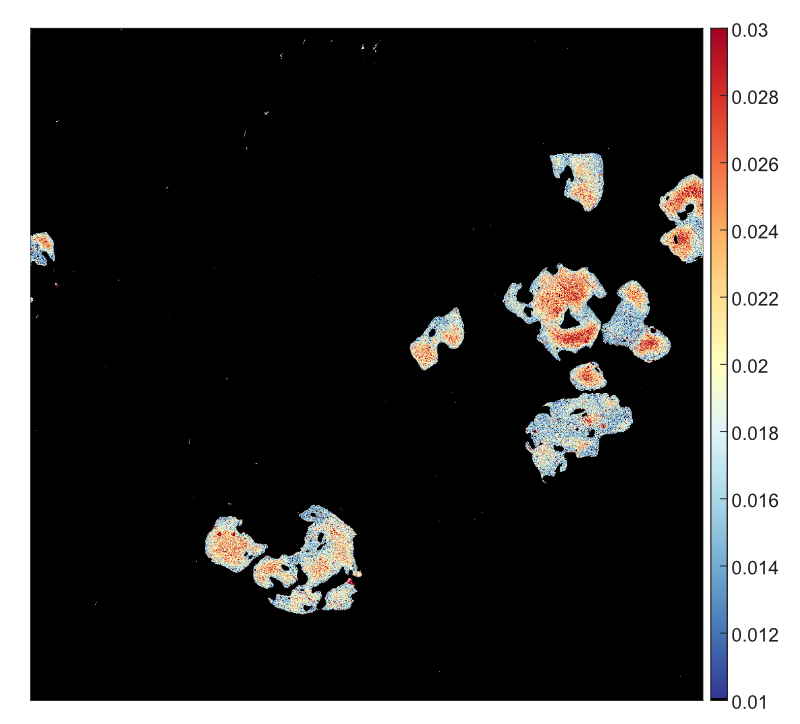
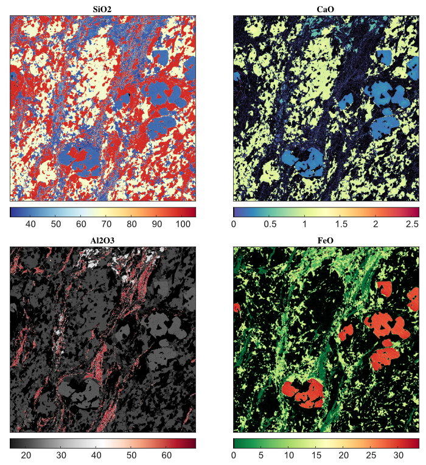
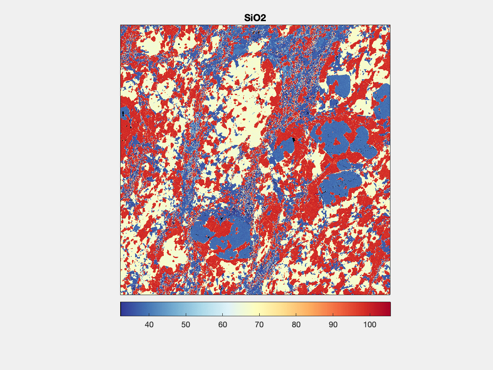
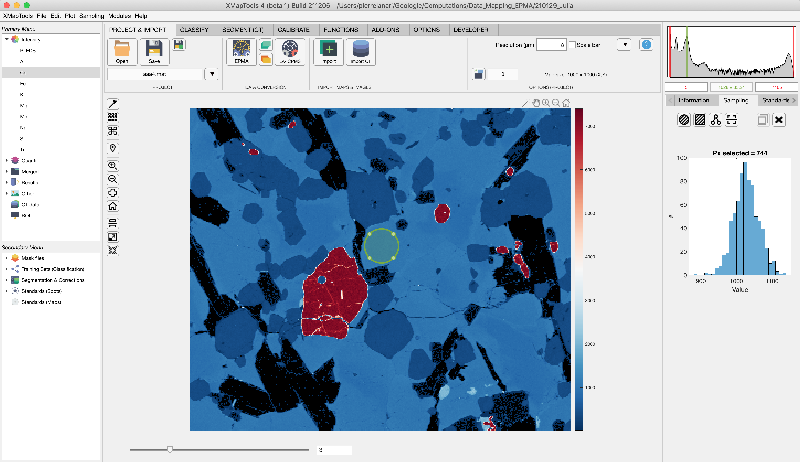
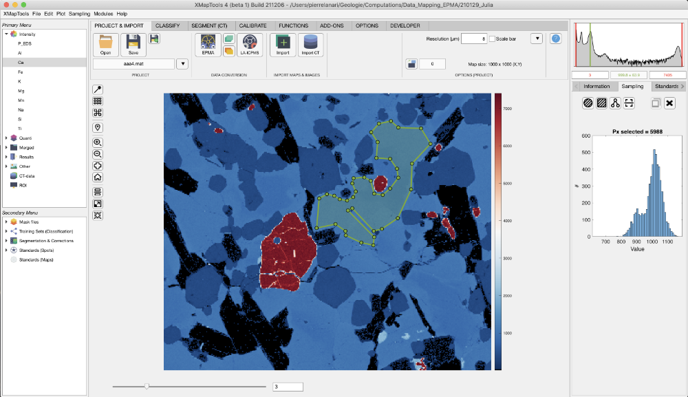
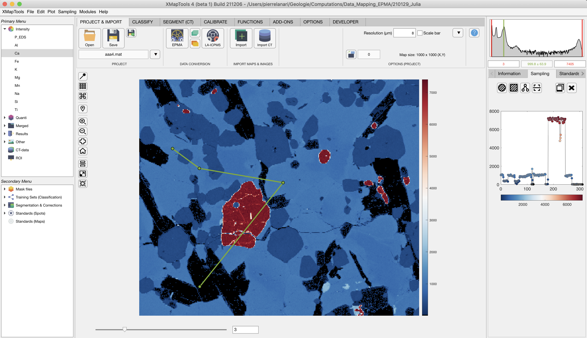
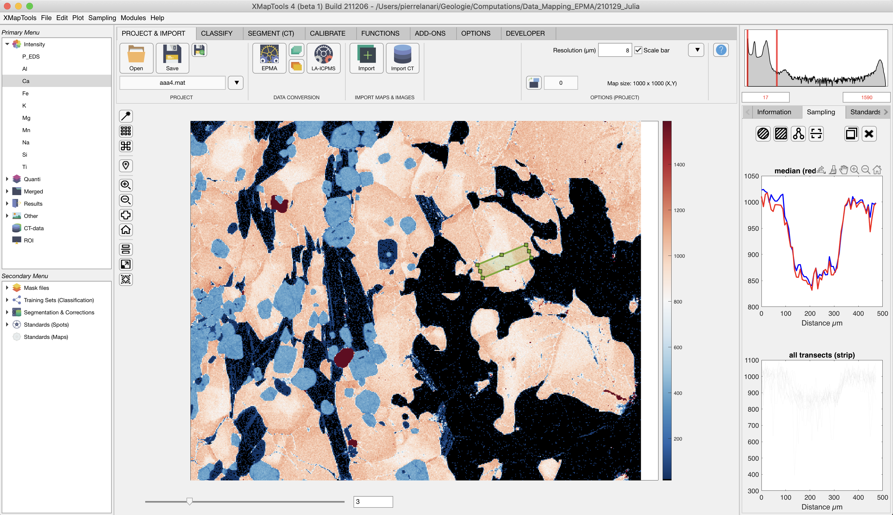

Help file version 03.03.2022 by P. Lanari
Access XMapTools resources online
This part of XMapTools 4 is currently at level 2 of development (1, largely untested; 2, tested for a few cases; 3, tested and benchmarked; 4, publication quality).
Table of content
What are "image-data" in XMapTools?
How to generate and edit images?
- Single-plot image
- Multi-plot image
- Multi-plot image & GIF
Images are plots which are stored in the project file and can be accessed via the primary menu under the category Images. These plots can be generated using the tools available in the menu Image. They can be edited anytime and changes are stored.
Four types of images can be generated including:
Display a map using the primary menu and eventually adjust the color contrast, for example using the live histogram. In the main menu, select Image >> Add Current Image. A new image object is generated and stored in the category Images at the bottom of the primary menu.
You can display this image at any time by selecting the item Img (single-layer) #X (with X the number of the image) in the primary menu.
To edit the image, unfold the image item and select the map. You can adjust the color settings (limits, color palette, etc.); changes are saved within the image object.
To export the image, select the image item in the primary menu and select in the menu File > Save Image or Edit > Copy Image.

Figure 1: Example of image generated with XMapTools for Ca (apfu) in garnet.Activate first the multi-selection mode via the menu Image > Multi-Selection Mode. The names in the primary menu are displayed in blue when this mode is active: multiple maps can be selected and data manipulation is not possible. It is not recommanded to use XMapTools with the multi-selection mode on, this mode should only be used to generate images.
Once the mode is activated, select several maps using the primary menu. A mosaic is generated and displayed in the main window. After selecting the maps, select in the menu Image > Add Multi-Plot Image and a new image object is added to the category Images.
You can unfold the item Img (multi-plot) #X (with X the number of the image object) in the primary menu and select the maps one by one to adjust the color contrast. You can also change the color palette in the panel Options.
Select the main item to display the mosaic and save the image.

Figure 2: Example of multi-plot image generated with XMapTools. Maps are expressed in oxide wt%. Note that each map is plotted with a different color palette.
Figure 3: Example of GIF generated with the images shown in Figure 2.This help file contains a description of the Sampling Tools. These tools are available at any stage of the data procedure and apply to the map plotted in the main figure.
The following sampling functions are available vial the menu Sampling or in the section sampling of the live output display located below the live histogram:
In the main menu, select Sampling > Circle and draw a circle on the map by clicking on a position, holding and dragging the mouse over an area. Note that a cross cursor becomes available when the mouse pointer is over the map and the sampling option has been activated.
After drawing the circle, click and hold one of the four filled dots located in the circle to change its size. In the inner area of the circle, a cross cursor may be used to move the circle's position. If it is not possible to edit or move the ROI, select XMapTools, press ctr (control) and try editing the ROI again.
The result of the data extraction is exhibited by the green bar in the graphic on the top right of the main window and its correspondent numbers located immediately below. In addition an histogram is plotted using all pixel data contained within the ROI.

Figure 1: Example sampling of an intensity map (Ca) using the circle shape. Note that in this example, the average value of the selected pixels (Nb = 774) is 1028 ± 35.24 (stdev).In the main menu, select Sampling > Area (Polygon) and draw a polygon on the map by clicking on several positions. Click on the first point to close the polygon (a circle pointer mouse appears).
The polygon shape can be edited. If it is not possible to edit or move the ROI, select XMapTools, press ctr (control) and try editing the ROI again.

Figure 2: Example sampling of an intensity map (Ca) using the polygon shape. Note that in this example, the average value of the selected pixels (Nb = 774) is 999.8 ± 63.9 (stdev) nut two plagioclase compositions are visible on the histogram (at 900 and 1030 counts).In the main menu, select Sampling > Transect and draw a polygon on the map by clicking on several positions. Right-clicking ends the selection. You need two select at least two positions to obtain a valid transect.
The resulting profile is shown in the live display, in category sampling (Fig 3).
The transect position can be edited and the plot is automatically updated. Note that changing the color bar limits changes the profile as colors from the color bar are used to plot the spots. If it is not possible to edit or move the ROI, select XMapTools, press ctr (control) and try editing the ROI again.

Figure 3: Example sampling of an intensity map (Ca) using a transect starting at the point located to-left.This tools is used to extract the mean and median profile from a strip with a rectangular shape using the composition of each transect. For a given pixel on the central transect, the value is calculated as the mean and median of the pixel compositions perpendicular to the reference transect.
In the main menu, select Sampling > Strip and draw an horizontal rectangle on the map by clicking on the corner position (top-left), holding and dragging the mouse over an area. Note that a cross cursor becomes available when the mouse pointer is over the map and the sampling option has been activated.
To move the rectangle, position the cursor on the central part of the rectangle, left-click, hold and move it, droping it in the new position.
Note: The retangle must be delineated with its elongation horizontally positioned. However, it can be later rotated by positioning the cursor on the rectangle's perimeter, nearby one of its edges and then rotation cursor is activated.
Once the rectangle is created (or edited), plots are updated in the live display sampling category. Two plots are available: (top) two curves, in red, the median, and in blue, the mean; (bottom) all profiles used to generated the plot above are plotted in grey.

Figure 3: Example sampling of an intensity map (Ca) using a strip from bottom left to top right.